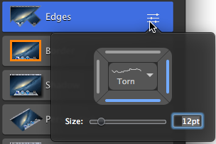
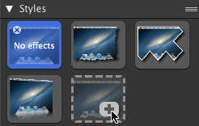

Effects can only be applied to an entire capture, not to portions of a capture.
Effects are only available for image captures. Share your video to Camtasia to enhance your video with annotations and effects.
You can apply multiple effects to a capture.
Applying the Perspective effect flattens the capture.
Click the properties button to view and edit the properties for an effect.
You can save customized effects to the style gallery for future use. See About the Style Gallery.
Apply an effect:
Click the Effects tab.
Click an effect or click a style from the styles gallery to apply to an image capture.
Click the Properties button to adjust the properties.

Add a Custom Style to the Gallery:
Click the Effects tab.
Click to enable the desired effects. Click the Properties button to adjust the properties. As you edit the properties, the custom style appears in the styles gallery.
Click the Add Style button to permanently add the new style to the gallery. 